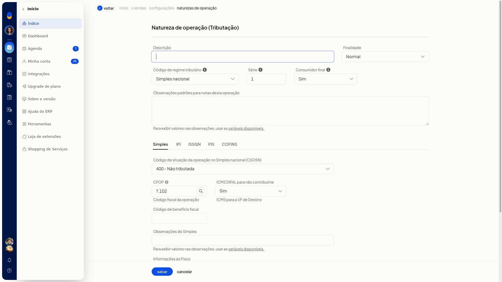
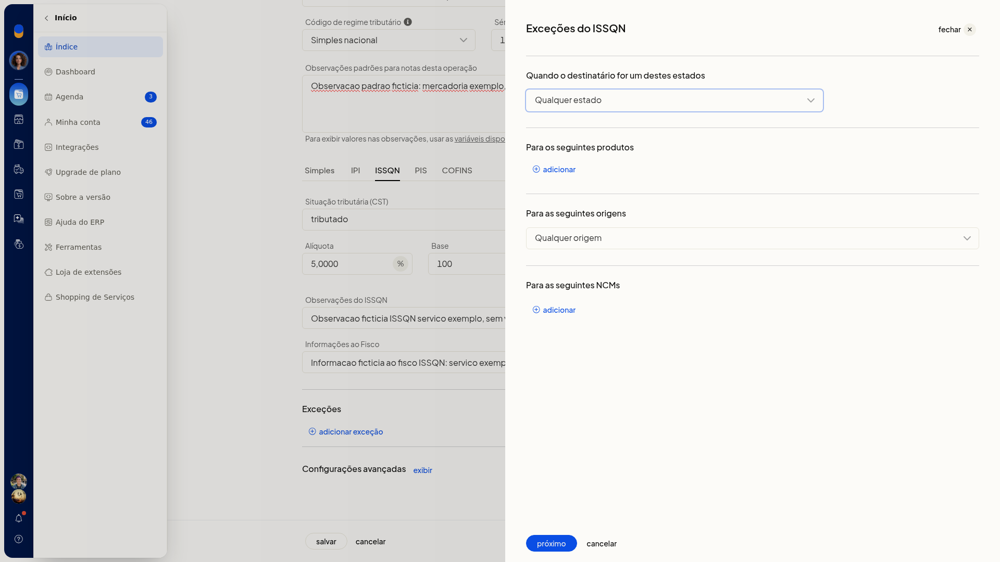
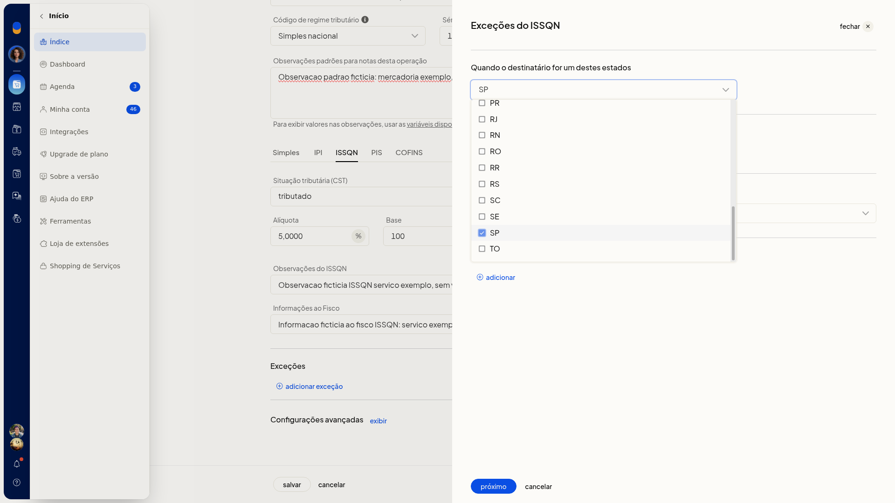
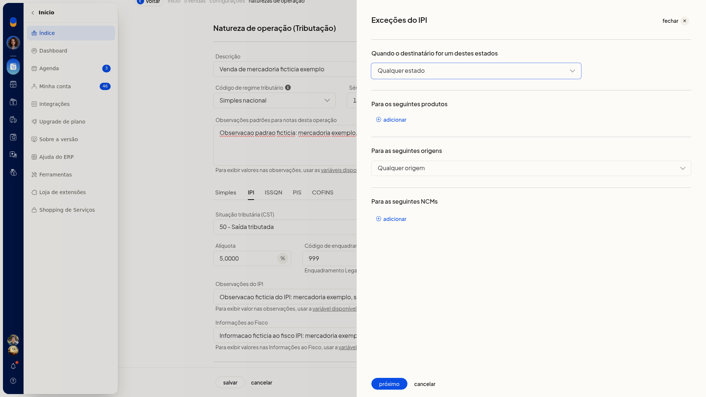
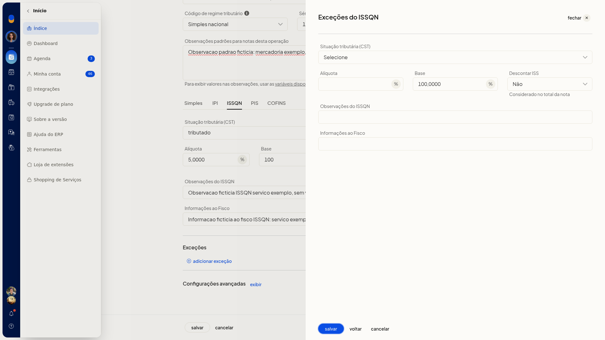
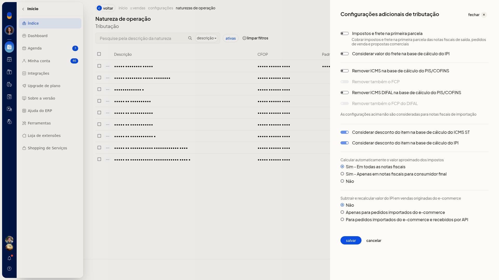

Natureza de operação: regras de exceção e ICMS ST
Importante
- Para avançar no assistente da exceção, marque ao menos uma UF ou informe um produto, uma origem ou um NCM.
- No Regime normal, o CST 10 trata a substituição tributária.
Instruções
Incluir uma regra de exceção
-
Acesse Configurações > Configurações ERP.
-
Abra a aba Notas Fiscais.

-
Clique em Naturezas de operação de saída (tributação).


-
Abra o formulário da natureza.

-
Na aba do imposto, abra a inclusão de uma exceção. As abas são ICMS, IPI, PIS, COFINS e ISSQN.

-
No filtro, marque uma ou mais UFs, de AC a TO, ou EX. Ou informe o produto, a origem ou o NCM. A origem vai de 0 a 8.


-
Clique em Avançar.

-
Informe a situação, a alíquota, a base e as observações. No ISSQN, informe também Descontar ISS, com Sim ou Não. A ajuda desse campo indica que o valor é considerado no total da nota.


-
Clique em Cancelar se não for manter a exceção. A tela volta à aba do imposto e a lista de exceções fica sem a nova linha.
Definir a substituição tributária do ICMS
- No formulário da natureza, selecione em CRT a opção Regime normal quando a operação usar esse regime. Os códigos de ICMS passam a ser o CST.
- Selecione o CST 10 para a substituição tributária.
- Abra as opções avançadas.
- Em Redução BC ICMS-ST, selecione Padrão ou Antes de somar o IPI.
Revisar o desconto do item na base do ICMS ST
-
Na lista de naturezas de operação de saída, clique em Configurações.
-
Em Configurações adicionais de tributação, revise Considerar desconto do item na base de cálculo do ICMS ST.

-
Clique em Salvar para gravar a revisão ou em Cancelar para fechar sem gravar e voltar à lista.
Resultado
Ao cancelar a exceção, a aba do imposto permanece sem a nova linha. Em Configurações adicionais de tributação, Cancelar retorna à lista de naturezas sem gravar a alteração.
Informações adicionais
- A inclusão da exceção fica na aba do imposto da natureza: ICMS, IPI, PIS, COFINS ou ISSQN.
- O filtro da exceção aceita UF, produto, origem ou NCM. As UFs vão de AC a TO, além de EX. A origem vai de 0 a 8.
- Trocar o CRT de Simples nacional para Regime normal substitui o CSOSN pelo CST de ICMS.